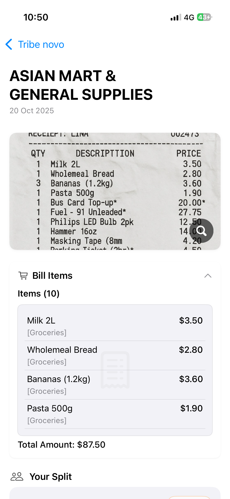

Building TribeBills: Architecture of a Solo-Built Fintech Platform
Published on April 9, 2026
I've written before about what it feels like to build software with AI — the symbiosis, the confidence, the occasional vertigo of having more power than you know what to do with. That essay was about the journey. This one is about what I actually built.
TribeBills is a group bill-splitting platform. Not a tutorial project, not a weekend hack — a multi-surface production system I designed, built, deployed, and operate entirely on my own. It handles shared expenses across groups: splitting bills, tracking payments, managing subscriptions, scanning receipts with AI, and coordinating across members with different devices and auth contexts.
This post is the technical architecture behind it. The decisions, the layers, the trade-offs — and what I learned from each.
The System at a Glance
TribeBills runs across three client surfaces and a shared backend. Two native-feeling frontends — an iOS app and a web app — both hitting the same API, sharing auth, billing, and data models. Beneath that: a FastAPI backend, PostgreSQL, an AI pipeline for receipt intelligence, Stripe for subscriptions, and the infrastructure to keep it all running on a single VPS.

TribeBills system architecture — from client surfaces through the API layer down to data and services.
Let me walk through each layer.
Client Layer: Two Apps, One Product
The iOS app is built in SwiftUI with an MVVM architecture. VisionKit handles the document scanner, feeding images into Gemini's multimodal receipt parsing. Firebase Auth provides identity, while the app increasingly treats the PostgreSQL-backed API as the source of truth. Push notifications come through APNs.
{kind=link}

The iOS app in production.
The web app runs on Next.js 16, React 19, TypeScript, and Tailwind CSS v4. Zustand manages state. It supports Google OAuth, Apple Sign-In, and a full guest-to-registered user promotion flow. The web surface is particularly important for one scenario: someone receives an invite link, lands on the web, joins a tribe as a guest, and participates — all before ever creating an account. That join-by-link flow is one of the product's core affordances.

TribeBills.com — receipt parsing and item classification in action.
Both clients hit the same backend API. Same auth flow, same data, same billing. The consistency isn't just architectural tidiness — it means a user can scan a receipt on their phone, and their housemate can see the split on a laptop seconds later.
API Layer: 50+ Endpoints, Seven Modules
The backend is FastAPI running on Gunicorn with 8 Uvicorn workers, containerized in Docker. The API exposes over 50 endpoints across seven route modules:
- Users — registration, login (email/password, Google, Apple Sign-In), JWT access + refresh token rotation, guest identity via
X-Guest-ID, device management for push, profile, account deletion - Tribes — group CRUD, member management, join-by-code, archive/restore, cover images
- Bills — bill creation with auto-split calculation, line items, image uploads, calendar and chronological views, CSV export
- Payments — payment tracking, verification workflow, proof-of-payment image upload with AI parsing
- Subscriptions — Stripe Checkout session creation, customer portal, webhook handling (checkout complete, subscription updates, invoice events), tier-based usage gating
- Recurring Bills — schedule creation, series management, daily cron-driven processing via a secured internal endpoint
- Dashboard / Analytics — spending summaries, category breakdowns
That's the skeleton. But the interesting parts aren't the endpoints themselves — they're the cross-cutting concerns: how auth works across guest and registered users, how rate limits protect expensive AI calls, how circuit breakers keep the system standing when third-party services stumble.
Data Layer: PostgreSQL as Source of Truth
PostgreSQL 15 via SQLAlchemy 2.x ORM with Alembic migrations. The schema spans 10+ tables: users, tribes, user_tribes, bills, bill_splits, payments, subscriptions, recurring_bill_schedules, notifications, device_tokens, refresh_tokens, categories, bill_items.
The schema supports soft deletes, guest-to-user promotion, subscription tier gating (tribe and bill limits enforced at the API level), and a recurring bill series model with parent-child schedule relationships. This wasn't the original data layer though — more on that migration below.
AI Pipeline: Receipt Intelligence
Receipt parsing is one of TribeBills' differentiators. When a competitor charges a subscription just to attach an image to a split, TribeBills reads the image, extracts every line item, categorizes them, and auto-fills the bill. Here's the pipeline:
- Image capture — VisionKit on iOS, file upload on web
- Preprocessing — EXIF orientation correction via Pillow (receipts photographed at odd angles are more common than you'd think)
- Multimodal extraction — the image goes to Google Gemini 2.0 Flash Lite with a structured prompt requesting JSON: items (name, price), tax, total, shop name
- Post-OCR categorization — if enabled, a second Gemini call maps extracted items to the platform's category taxonomy
- Payment proof parsing — a separate pipeline for payment verification images: extracts amount, date, method, transaction ID
Each AI call is wrapped in a circuit breaker — threshold of 3 failures, recovery window of 30–60 seconds. When the breaker opens, the system returns structured error responses rather than failing the request. The user can still create the bill manually; the AI is an accelerant, not a dependency. Token costs were reduced roughly 60% through chunking strategies, prompt tuning, and real-time cost monitoring across providers.
Key Engineering Decisions
These are the choices that shaped TribeBills' architecture. Each one involved trade-offs, and I think the reasoning matters more than the result.
Firebase to PostgreSQL Migration
The iOS app started on Firebase — Auth, Firestore, Storage. It's the path of least resistance for a solo mobile developer: real-time sync, managed auth, no server to run. But as the product matured and the web app joined, Firebase's limitations surfaced. Relational queries were painful. Cross-collection constraints didn't exist. Reporting on shared expenses across users and tribes required gymnastics that would've been a simple JOIN in SQL.
So I migrated the authoritative data layer to PostgreSQL. The iOS app retains Firebase Auth and Firestore caching for offline support, while the backend API + PostgreSQL is now the system of record. A MigrationManager in the iOS codebase handles one-time data transfer from Firestore to the API. The migration happened without downtime or data loss — which, for a solo-run production system with real users, felt like landing a plane while replacing the engine.
Guest Identity System
This was a product requirement that turned into an interesting engineering problem. Someone receives a bill-split link but doesn't have an account. What happens? In most apps: a registration wall. In TribeBills: they join immediately as a guest.
The web frontend creates a guest identity (UUID-based), stores it locally, and passes it via an X-Guest-ID header. The guest can join tribes, view bills, and participate. When they eventually register, the backend promotes the guest record — preserving their entire history, splits, and tribe memberships. This required careful coordination across auth middleware, API headers, and client-side state. Getting it wrong meant either losing user data or creating duplicate identities. Getting it right meant zero friction for new users, which is everything for a social product.
Recurring Bills via In-Container Cron
Rather than spinning up a separate scheduler service — Celery, a Lambda, a managed cron — I run a cron job inside the Docker container that hits a secured internal endpoint (X-Cron-Key header) daily to process due recurring bills. Operationally simple for a solo-run system: one container, one deployment, no separate scheduler infrastructure. I wrote about the debugging story in my vibe coding essay — environment variables not propagating from the Docker container to the cron daemon cost me a week of debugging. The fix was trivial; finding it was not.
Rate Limiting and Abuse Prevention
SlowAPI handles rate limiting with environment-aware thresholds: signup at 15/day in production, OCR at 50/day, auth at 5/min + 20/hour, resource creation at 50/day, data access at 100/hour. The OCR endpoint is the most expensive to abuse — each call hits a paid AI API — so it gets the tightest limits plus circuit breaker protection. The limits are generous enough for legitimate use but tight enough that I don't wake up to a surprise invoice.
Freemium Gating
Stripe manages subscriptions. Tier limits — max tribes, monthly bill count, recurring bill access — are enforced at the API layer with clear HTTP 403 payloads that the clients parse into upgrade prompts. The web frontend has a full UpgradeModal flow and tier-aware feature access checks. The decision to gate at the API rather than the client was deliberate: it means the rules are consistent regardless of which surface the user is on, and they can't be bypassed by a clever network request.
Security Posture
JWT with HS256, refresh token rotation and revocation. Apple Sign-In JWT verification against Apple's public keys. Google ID token verification. On the web frontend, next.config.ts includes CSP (report-only), HSTS, COOP/CORP, Permissions-Policy, and production console stripping. The API uses bcrypt password hashing via passlib. None of this is exotic — it's table stakes — but implementing it all correctly as a solo developer, across two client surfaces and a backend, forces you to understand every layer of the auth stack.
Infrastructure
The entire platform runs on a self-managed Linux VPS. Docker + docker-compose orchestrates the app container and PostgreSQL 15 Alpine. Nginx handles reverse proxying with TLS termination. Coolify manages automated deployments — push to main, it builds and deploys.
Image storage lives on the local filesystem (migrated from S3; function signatures retained so the migration back is trivial if scale demands it). Monitoring runs through Mixpanel analytics with non-blocking middleware and its own circuit breaker — analytics failures can never affect request latency. Push notifications go through APNs via aioapns, with device token management and platform-aware delivery.
It's not a fancy infrastructure story. There's no Kubernetes, no microservices, no multi-region failover. It's one server running one container serving real users. For a solo-operated platform, operational simplicity is a feature — every moving part is a part that can break at 2 AM with nobody else on call.
What I Learned
Building TribeBills taught me something that reading about architecture never could: that the hardest part isn't choosing the right technology. It's making the technologies you've chosen work together gracefully under real-world constraints — with real users, real money flowing through Stripe, real receipts photographed in bad lighting, and real deadlines set by your own ambition.
Full-stack ownership across iOS, web, backend, database, and infrastructure sounds impressive on paper. In practice, it means context-switching between SwiftUI layout bugs, SQLAlchemy migration conflicts, and Nginx config syntax — sometimes in the same afternoon. The breadth is the point, though. I wrote about this in my vibe coding essay: breadth creates depth. You can't understand how a receipt upload should work unless you've touched every layer it passes through.
The AI integration taught me the most. Production AI isn't "call the API and hope" — it's circuit breakers, fallbacks, cost controls, structured error handling, and building the product so it works even when the AI doesn't. The manual flow always has to be there. The AI just makes it faster.
And operating it solo taught me discipline. Every architectural decision gets pressure-tested by the question: can I debug this at 2 AM? If the answer is "not easily," the design is wrong — no matter how elegant it looks in a diagram.